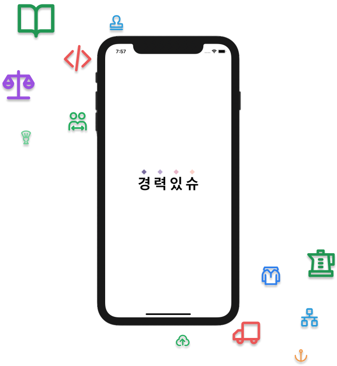
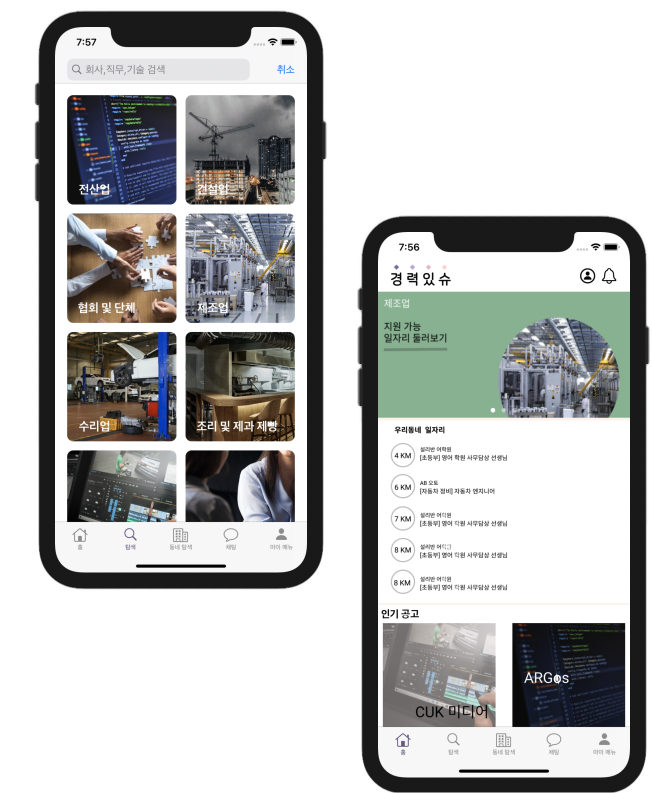
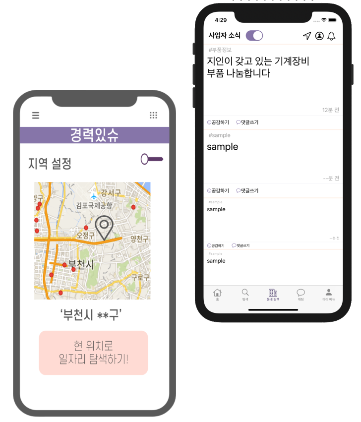
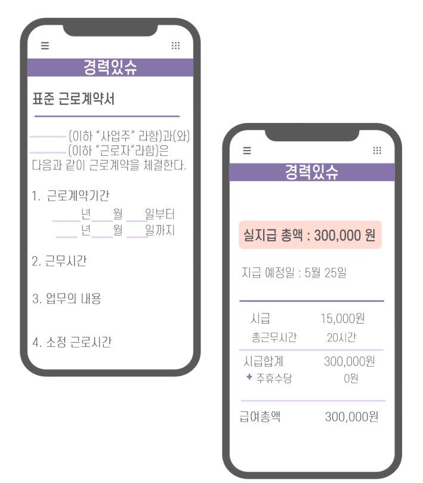
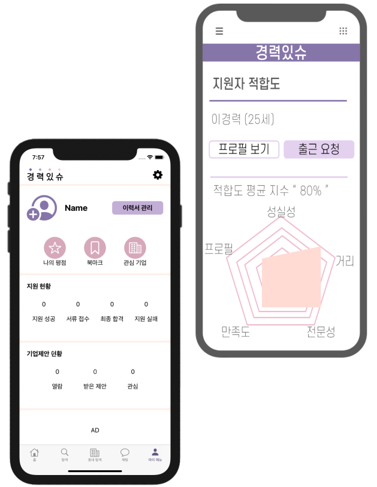

About
공고탐색
마이페이지
로그인
회원가입
소상공인
과
기술, 경력직
을 위한
단기채용 구직 플랫폼
경력있슈


나만의 맞춤형
추천공고
큐레이션
희망하는 직무를
지역과 적성에 따라 빠르게
탐색하세요.
내
주변지역
을 선택하고
지원자, 사장님
들과
소통해 보세요!
지원자간 원활한 정보공유
사업자간 활발한 소통이 가능합니다.


법적 절차 대행
전자근로 작성부터
증명서 발급
까지 한번에
채용: 전자 근로계약서
급여 정산: 급여명세서
보험 가입: 4대 보험
동의서 작성: 비밀유지계약서, 공동개발계약서
제증명 출력: 재직증명서, 퇴직증명서,
경력증명서, 기타증명서
상호 리뷰를 통한
신뢰성 있는
매칭
마이페이지 & 5각형 역량 적합도
개인정보, 지원현황, 평점, 기업 스크랩
기업과 지원자간 상호 평가
1. 지원자의 프로필 정보나
기존 경력 상의 리뷰 평가를 확인 후 채용 요청이 가능합니다.
2. 사업주가 거래 경험을 바탕으로
노동자 추천서를 작성할 수도 있습니다.
